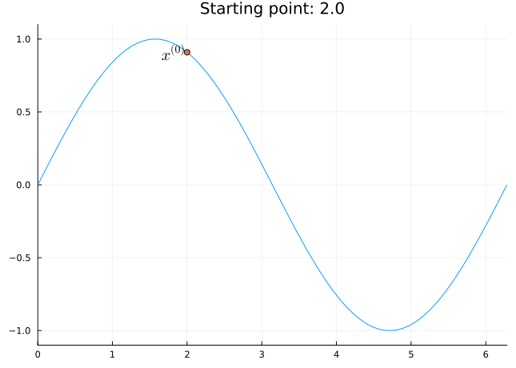
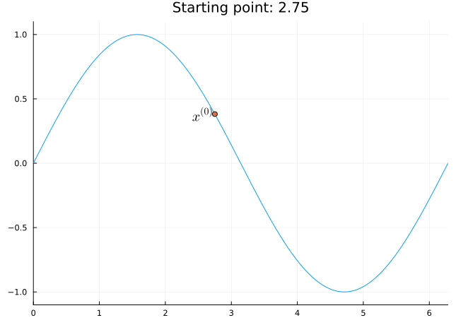
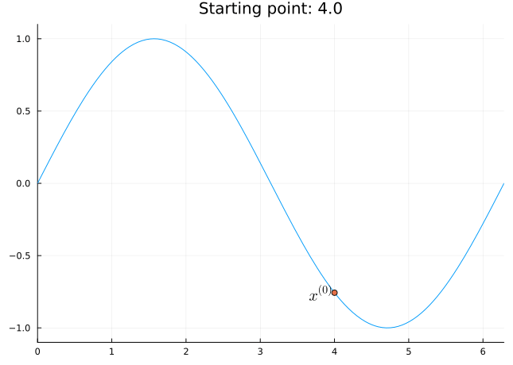
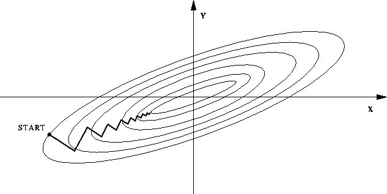
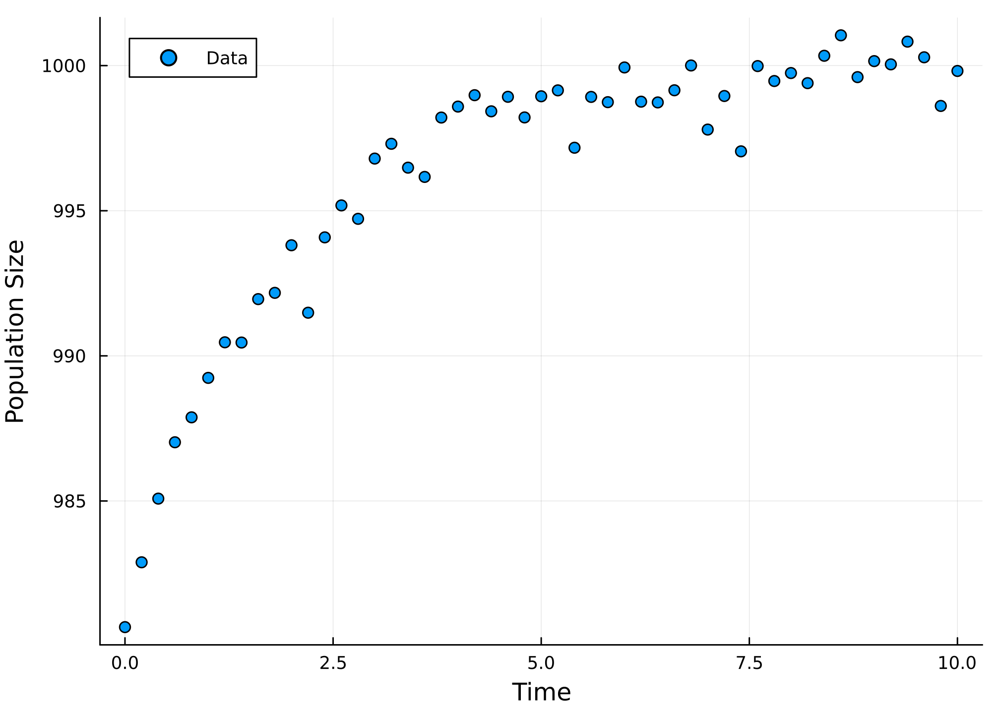
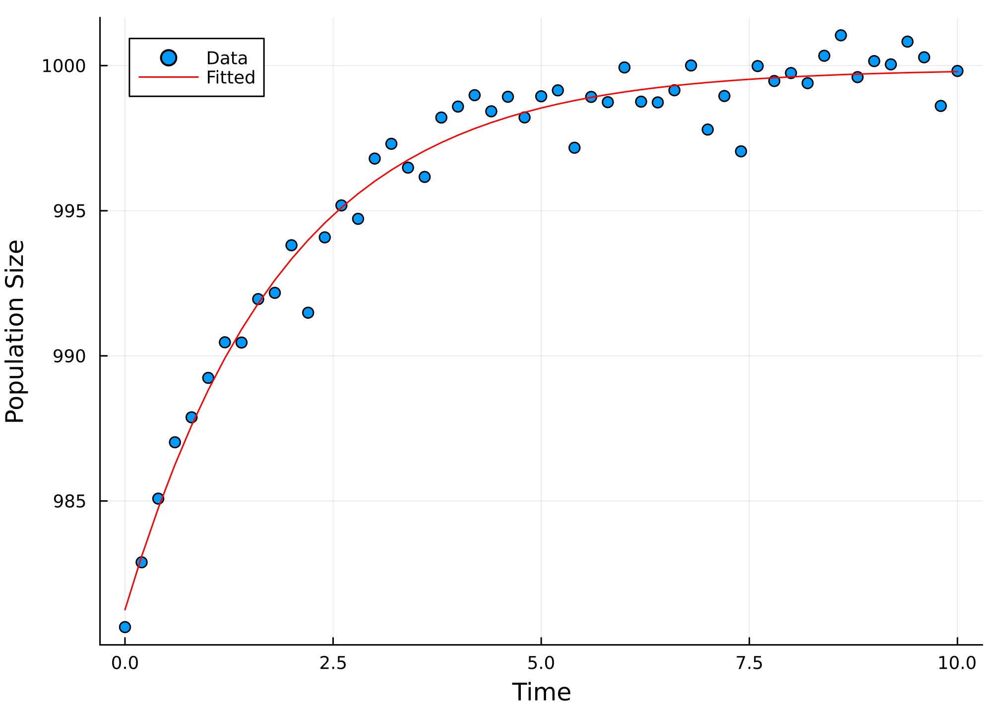

Second-Order Methods
Goals
- Understand Newton-Raphson as a local quadratic approximation to a minimization problem.
- Connect Fisher scoring to the Newton-Raphson method.
- Examine applications of second-order methods to the iteratively reweighted least squares problem and generalized linear models.
Packages
Overview
Consider maximizing a log-likelihood function \(\ell(\boldsymbol{\theta})\), \(\boldsymbol{\theta} \in \Theta \subset \mathbb{R}^p\). View it as a parameterized function in the sense that it depends on data/parameters that are given or fixed. For maximum likelihood estimation we are interested in how the log-likelihood quantifies the plausibility of specific parameter values \(\boldsymbol{\theta}\)
\[ \ell(\boldsymbol{\theta}) = \ell(\boldsymbol{\theta} \mid Y, X, \ldots) = \log \prod_{i} p(y_{i} \mid x_{i}, \boldsymbol{\theta}) = \sum_{i} \log p(y_{i} \mid x_{i}, \boldsymbol{\theta}) \]
Our previous notes are written in terms of minimization. To stay consistent, we work with the negative log-likelihood
\[ f(\boldsymbol{\theta}) = -\ell(\boldsymbol{\theta}). \]
Maximizing \(\ell\) is the same as minimizing \(f\). Keep the sign change in mind when comparing these notes against other references; many of them state the algorithms below in terms of \(\ell\).
Gradient of \(f\) (the negative score): \[ \nabla f(\boldsymbol{\theta}) = -\nabla \ell(\boldsymbol{\theta}) = \begin{pmatrix} D_{1} f(\boldsymbol{\theta}) \\ \vdots \\ D_{p} f(\boldsymbol{\theta}) \end{pmatrix} \]
Hessian of \(f\): \[ \nabla^2 f(\boldsymbol{\theta}) = -\nabla^2 \ell(\boldsymbol{\theta}) = \begin{pmatrix} D_{1} D_{1} f(\boldsymbol{\theta}) & \dots & D_{1} D_{p} f(\boldsymbol{\theta}) \\ \vdots & \ddots & \vdots \\ D_{p} D_{1} f(\boldsymbol{\theta}) & \dots & D_{p} D_{p} f(\boldsymbol{\theta}) \end{pmatrix} \]
Observed information matrix (Hessian of the negative log-likelihood):
\[ \nabla^2 f(\boldsymbol{\theta}) \]
Expected (Fisher) information matrix: \[ \mathbb{E}[\nabla^2 f(\boldsymbol{\theta})]. \]
The expectation is taken with respect to the distribution of the \(Y\); whatever is an argument to the common density \(p(y \mid \boldsymbol{\theta})\).
- In these notes we write iterates as \(\boldsymbol{\theta}^{(k)}\), with the iteration number \(k\) as a superscript. Subscripts are already in use for observations (\(y_{i}\), \(\boldsymbol{x}_{i}\)) and for components of a vector, so the superscript avoids ambiguity with the subscript \(i\).
- As before, \(t\) denotes a step size.
Newton’s Method
Originally developed for finding roots of nonlinear equations \(h(\boldsymbol{x}) = \boldsymbol{0}\).
Newton’s method, aka Newton-Raphson method, is considered the gold standard for its fast (quadratic) convergence. Once the iterates are close enough to a solution \(\boldsymbol{\theta}_{\ast}\),
\[ \frac{\|\boldsymbol{\theta}^{(k+1)} - \boldsymbol{\theta}_{\ast}\|}{\|\boldsymbol{\theta}^{(k)} - \boldsymbol{\theta}_{\ast}\|^2} \to \text{constant}. \]
Idea: iterative quadratic approximation.
Taylor expansion around the current iterate \(\boldsymbol{\theta}^{(k)}\)
\[ f(\boldsymbol{\theta}) \approx f(\boldsymbol{\theta}^{(k)}) + \nabla f(\boldsymbol{\theta}^{(k)})^{\top} (\boldsymbol{\theta} - \boldsymbol{\theta}^{(k)}) + \frac 12 (\boldsymbol{\theta} - \boldsymbol{\theta}^{(k)})^{\top} [\nabla^2 f(\boldsymbol{\theta}^{(k)})] (\boldsymbol{\theta} - \boldsymbol{\theta}^{(k)}) \]
and then minimize the quadratic approximation. To minimize the quadratic function, we set its gradient to zero
\[ \nabla f(\boldsymbol{\theta}^{(k)}) + [\nabla^2 f(\boldsymbol{\theta}^{(k)})] (\boldsymbol{\theta} - \boldsymbol{\theta}^{(k)}) = \boldsymbol{0}_p, \]
which suggests the next iterate \[ \begin{eqnarray*} \boldsymbol{\theta}^{(k+1)} &=& \boldsymbol{\theta}^{(k)} - [\nabla^2 f(\boldsymbol{\theta}^{(k)})]^{-1} \nabla f(\boldsymbol{\theta}^{(k)}) \\ &=& \boldsymbol{\theta}^{(k)} + [-\nabla^2 \ell(\boldsymbol{\theta}^{(k)})]^{-1} \nabla \ell(\boldsymbol{\theta}^{(k)}). \end{eqnarray*} \]
This is a naive Newton’s method, because as we saw with gradient descent, the search direction \(-[\nabla^2 f(\boldsymbol{\theta}^{(k)})]^{-1} \nabla f(\boldsymbol{\theta}^{(k)})\) may overshoot.
There is also a stability issue. Naive Newton’s iterate is not guaranteed to be a descent algorithm. It’s equally happy to head uphill or downhill. The following example shows that the Newton iterate converges to a local maximum, converges to a local minimum, or diverges depending on starting points.
using Plots; gr()
using LaTeXStrings, ForwardDiff
f(x) = sin(x)
df = x -> ForwardDiff.derivative(f, x) # gradient
d2f = x -> ForwardDiff.derivative(df, x) # hessian
x = 2.0 # start point: 2.0 (local maximum), 2.75 (diverge), 4.0 (local minimum)
titletext = "Starting point: $x"
anim = @animate for iter in 0:10
iter > 0 && (global x = x - d2f(x) \ df(x))
p = Plots.plot(f, 0, 2π, xlim=(0, 2π), ylim=(-1.1, 1.1), legend=nothing, title=titletext)
Plots.plot!(p, [x], [f(x)], shape=:circle)
Plots.annotate!(p, x, f(x), text(latexstring("x^{($iter)}"), :right))
end
gif(anim, "./tmp.gif", fps = 1);


Remedies for the instability issue:
- approximate \(\nabla^2 f(\boldsymbol{\theta}^{(k)})\) by a positive definite \(\boldsymbol{A}\) (if it’s not), and
- line search (backtracking).
Why do we insist on a positive definite approximation of Hessian? Recall from first-order methods that we want the search direction to be a descent direction; that is, a direction \(\Delta \boldsymbol{\theta}^{(k)}\) with a negative directional derivative, \(\nabla f(\boldsymbol{\theta}^{(k)})^{\top} \Delta \boldsymbol{\theta}^{(k)} < 0\). Take \(\Delta \boldsymbol{\theta}^{(k)} = -[\boldsymbol{A}^{(k)}]^{-1} \nabla f(\boldsymbol{\theta}^{(k)})\). By first-order Taylor expansion,
\[ \begin{eqnarray*} & & f(\boldsymbol{\theta}^{(k)} + t \Delta \boldsymbol{\theta}^{(k)}) - f(\boldsymbol{\theta}^{(k)}) \\ &=& f(\boldsymbol{\theta}^{(k)}) + t \cdot \nabla f(\boldsymbol{\theta}^{(k)})^{\top} \Delta \boldsymbol{\theta}^{(k)} + o(t) - f(\boldsymbol{\theta}^{(k)}) \\ &=& t \cdot \nabla f(\boldsymbol{\theta}^{(k)})^{\top} \Delta \boldsymbol{\theta}^{(k)} + o(t) \\ &=& - t \cdot \nabla f(\boldsymbol{\theta}^{(k)})^{\top} [\boldsymbol{A}^{(k)}]^{-1} \nabla f(\boldsymbol{\theta}^{(k)}) + o(t). \end{eqnarray*} \]
For \(t\) sufficiently small, the right-hand side is strictly negative when \(\boldsymbol{A}^{(k)}\) is positive definite. The reason is that the inverse of a positive definite matrix is also positive definite, so the quadratic form \(\nabla f(\boldsymbol{\theta}^{(k)})^{\top} [\boldsymbol{A}^{(k)}]^{-1} \nabla f(\boldsymbol{\theta}^{(k)})\) is positive whenever the gradient is nonzero. In other words, positive definiteness of \(\boldsymbol{A}^{(k)}\) is what makes the Newton direction a descent direction. The quantity \(\{\nabla f(\boldsymbol{\theta}^{(k)})^{\top} [\boldsymbol{A}^{(k)}]^{-1} \nabla f(\boldsymbol{\theta}^{(k)})\}^{1/2}\) is termed the Newton decrement.
We abbreviate positive definite as pd, and positive semidefinite as psd (or PSD). A psd matrix is not enough here; the quadratic form above may be zero, and the matrix may fail to be invertible.
In summary, a practical Newton-type algorithm iterates according to
\[ \boxed{ \boldsymbol{\theta}^{(k+1)} = \boldsymbol{\theta}^{(k)} - t [\boldsymbol{A}^{(k)}]^{-1} \nabla f(\boldsymbol{\theta}^{(k)}) = \boldsymbol{\theta}^{(k)} + t \Delta \boldsymbol{\theta}^{(k)} } \] where \(\boldsymbol{A}^{(k)}\) is a pd approximation of \(\nabla^2 f(\boldsymbol{\theta}^{(k)})\) and \(t\) is a step length.
- If \(\nabla^2 f(\boldsymbol{\theta})\) is positive definite for every \(\boldsymbol{\theta}\), then \(f\) is strictly convex and we can use the Hessian itself. Line search is still needed to guarantee convergence.
- Line search strategy: step-halving (\(t=1,1/2,\ldots\)), golden section search, cubic interpolation, Armijo rule, … Note the Newton direction
\[ \Delta \boldsymbol{\theta}^{(k)} = -[\boldsymbol{A}^{(k)}]^{-1} \nabla f(\boldsymbol{\theta}^{(k)}) \]
only needs to be calculated once. The cost of the line search mainly lies in objective function evaluation.
- The inverse in the Newton direction is only notation. Finding the Newton direction amounts to solving the linear system \(\boldsymbol{A}^{(k)} \Delta \boldsymbol{\theta}^{(k)} = -\nabla f(\boldsymbol{\theta}^{(k)})\) rather than inverting a matrix. Because \(\boldsymbol{A}^{(k)}\) is pd, we can use a Cholesky decomposition as in our earlier material on linear systems.
- How to approximate \(\nabla^2 f(\boldsymbol{\theta})\)? More of an art than science. Often requires problem specific analysis.
- Taking \(\boldsymbol{A} = \boldsymbol{I}\) leads to the method of steepest descent, also known as gradient descent.

Fisher Scoring
Fisher’s scoring method: replace \(\nabla^2 f(\boldsymbol{\theta})\) by the expected Fisher information matrix \[ \mathbf{FIM}(\boldsymbol{\theta}) = \mathbb{E}[\nabla^2 f(\boldsymbol{\theta})] = \mathbb{E}[\nabla f(\boldsymbol{\theta}) \nabla f(\boldsymbol{\theta})^{\top}] \succeq \boldsymbol{0}_{p \times p}. \] The second equality holds under exchangeability of expectation and differentiation. The matrix is psd because it is an expectation of outer products.
Therefore the Fisher’s scoring algorithm iterates according to \[ \boxed{ \boldsymbol{\theta}^{(k+1)} = \boldsymbol{\theta}^{(k)} - t [\mathbf{FIM}(\boldsymbol{\theta}^{(k)})]^{-1} \nabla f(\boldsymbol{\theta}^{(k)})}. \]
Generalized Linear Models
Logistic regression
Let’s consider a concrete example: logistic regression.
- The goal is to predict whether a credit card transaction is fraud (\(y_i=1\)) or not (\(y_i=0\)). Predictors (\(\boldsymbol{x}_i\)) include: time of transaction, last location, merchant, …
- \(y_i \in \{0,1\}\), \(\boldsymbol{x}_i \in \mathbb{R}^{p}\). Model \(y_i \sim \text{Bernoulli}(p_i)\).
The relevant probability mass function is based on a binomial/Bernoulli model:
\[ \begin{eqnarray*} \Pr(Y_i = y_i) &=& p_i^{y_i} (1-p_i)^{1-y_i} \\ &=& e^{y_i \ln p_i + (1-y_i) \ln (1-p_i)} \\ &=& e^{y_i \ln \frac{p_i}{1-p_i} + \ln (1-p_i)}, \end{eqnarray*} \]
where \[ \begin{eqnarray*} \mathbb{E} (y_i) = p_i &=& \frac{e^{\eta_i}}{1+ e^{\eta_i}} \quad \text{(mean function, inverse link function)} \\ \eta_i = \boldsymbol{x}_i^{\top} \boldsymbol{\beta} &=& \ln \left( \frac{p_i}{1-p_i} \right) \quad \text{(logit link function)}. \end{eqnarray*} \]
Given data \((y_i,\boldsymbol{x}_i)\), \(i=1,\ldots,n\),
\[ \begin{eqnarray*} \ell_n(\boldsymbol{\beta}) &=& \sum_{i=1}^n \left[ y_i \ln p_i + (1-y_i) \ln (1-p_i) \right] \\ &=& \sum_{i=1}^n \left[ y_i \boldsymbol{x}_i^{\top} \boldsymbol{\beta} - \ln (1 + e^{\boldsymbol{x}_i^{\top} \boldsymbol{\beta}}) \right] \\ f_n(\boldsymbol{\beta}) &=& -\ell_n(\boldsymbol{\beta}) = \sum_{i=1}^n \left[ \ln (1 + e^{\boldsymbol{x}_i^{\top} \boldsymbol{\beta}}) - y_i \boldsymbol{x}_i^{\top} \boldsymbol{\beta} \right] \\ \nabla f_n(\boldsymbol{\beta}) &=& -\sum_{i=1}^n \left( y_i \boldsymbol{x}_i - \frac{e^{\boldsymbol{x}_i^{\top} \boldsymbol{\beta}}}{1+e^{\boldsymbol{x}_i^{\top} \boldsymbol{\beta}}} \boldsymbol{x}_i \right) \\ &=& -\sum_{i=1}^n (y_i - p_i) \boldsymbol{x}_i = -\boldsymbol{X}^{\top} (\boldsymbol{y} - \boldsymbol{p}) \\ \nabla^2 f_n(\boldsymbol{\beta}) &=& \sum_{i=1}^n p_i(1-p_i) \boldsymbol{x}_i \boldsymbol{x}_i^{\top} = \boldsymbol{X}^{\top} \boldsymbol{W} \boldsymbol{X}, \quad \text{where } \boldsymbol{W} &=& \text{diag}(w_1,\ldots,w_n), w_i = p_i (1-p_i) \\ \mathbf{FIM}_n(\boldsymbol{\beta}) &=& \mathbb{E} [\nabla^2 f_n(\boldsymbol{\beta})] = \nabla^2 f_n(\boldsymbol{\beta}). \end{eqnarray*} \]
In this case, it happens to be that Newton’s method is equivalent to Fisher scoring iteration: \[ \begin{eqnarray*} \boldsymbol{\beta}^{(k+1)} &=& \boldsymbol{\beta}^{(k)} - t[\nabla^2 f_n(\boldsymbol{\beta}^{(k)})]^{-1} \nabla f_n(\boldsymbol{\beta}^{(k)}) \\ &=& \boldsymbol{\beta}^{(k)} + t(\boldsymbol{X}^{\top} \boldsymbol{W}^{(k)} \boldsymbol{X})^{-1} \boldsymbol{X}^{\top} (\boldsymbol{y} - \boldsymbol{p}^{(k)}) \\ &=& (\boldsymbol{X}^{\top} \boldsymbol{W}^{(k)} \boldsymbol{X})^{-1} \boldsymbol{X}^{\top} \boldsymbol{W}^{(k)} \left[ \boldsymbol{X} \boldsymbol{\beta}^{(k)} + t(\boldsymbol{W}^{(k)})^{-1} (\boldsymbol{y} - \boldsymbol{p}^{(k)}) \right] \\ &=& (\boldsymbol{X}^{\top} \boldsymbol{W}^{(k)} \boldsymbol{X})^{-1} \boldsymbol{X}^{\top} \boldsymbol{W}^{(k)} \boldsymbol{z}^{(k)}, \end{eqnarray*} \]
where \[ \boldsymbol{z}^{(k)} = \boldsymbol{X} \boldsymbol{\beta}^{(k)} + t(\boldsymbol{W}^{(k)})^{-1} (\boldsymbol{y} - \boldsymbol{p}^{(k)}) \]
are the working responses. A Newton’s iteration is equivalent to solving a weighted least squares problem \(\sum_{i=1}^n w_i (z_i - \boldsymbol{x}_i^{\top} \boldsymbol{\beta})^2\). Thus the name IRWLS (iteratively re-weighted least squares).
Other GLMs
Let’s consider the more general class of generalized linear models (GLM).
| Family | Canonical Link | Variance Function |
|---|---|---|
| Normal | \(\eta=\mu\) | 1 |
| Poisson | \(\eta=\log \mu\) | \(\mu\) |
| Binomial | \(\eta=\log \left( \frac{\mu}{1 - \mu} \right)\) | \(\mu (1 - \mu)\) |
| Gamma | \(\eta = \mu^{-1}\) | \(\mu^2\) |
| Inverse Gaussian | \(\eta = \mu^{-2}\) | \(\mu^3\) |
Under the assumption that \(Y\) belongs to an exponential family with density \[ p(y|\theta,\phi) = \exp \left\{ \frac{y\theta - b(\theta)}{a(\phi)} + c(y,\phi) \right\}. \]
- \(\theta\): natural parameter.
- \(\phi>0\): dispersion parameter.
A GLM relates the conditional mean \(\mu(\boldsymbol{\beta}) \equiv \mu = \mathbb{E}(Y|\boldsymbol{x})\) via a strictly monotone link function
\[ g(\mu) = \eta = \boldsymbol{x}^{\top} \boldsymbol{\beta}, \quad \mu = g^{-1}(\eta) \]
Its gradient, Hessian, and Fisher information are
\[\begin{eqnarray*} \nabla f_n(\boldsymbol{\beta}) &=& -\sum_{i=1}^n \frac{(y_i-\mu_i) \mu_i'(\eta_i)}{\sigma_i^2} \boldsymbol{x}_i \\ \nabla^2 f_n(\boldsymbol{\beta}) &=& \sum_{i=1}^n \frac{[\mu_i'(\eta_i)]^2}{\sigma_i^2} \boldsymbol{x}_i \boldsymbol{x}_i^{\top} - \sum_{i=1}^n \frac{(y_i - \mu_i) \mu_i''(\eta_i)}{\sigma_i^2} \boldsymbol{x}_i \boldsymbol{x}_i^{\top} \\ & & + \sum_{i=1}^n \frac{(y_i - \mu_i) [\mu_i'(\eta_i)]^2 (d \sigma_i^{2} / d\mu_i)}{\sigma_i^4} \boldsymbol{x}_i \boldsymbol{x}_i^{\top} \\ \mathbf{FIM}_n(\boldsymbol{\beta}) &=& \mathbb{E} [\nabla^2 f_n(\boldsymbol{\beta})] = \sum_{i=1}^n \frac{[\mu_i^{\prime}(\eta_i)]^2}{\sigma_i^2} \boldsymbol{x}_i \boldsymbol{x}_i^{\top} = \boldsymbol{X}^{\top} \boldsymbol{W} \boldsymbol{X}, \end{eqnarray*}\]
where \(\sigma_i^2\) denotes the variance of \(y_i\).
Thus, a general Fisher scoring method for GLMs takes the form of \[ \boldsymbol{\beta}^{(k+1)} = \boldsymbol{\beta}^{(k)} - t [\mathbf{FIM}_n(\boldsymbol{\beta}^{(k)})]^{-1} \nabla f_n(\boldsymbol{\beta}^{(k)}) \]
This algorithm map can be related back to IRWLS with weights \(w_i = [\mu_i^{\prime}(\eta_i)]^2/\sigma_i^2\) and some working responses \(z_i\).
Canonical vs non-canonical links
For a canonical link, \(\theta = \eta\), the second and third terms of Hessian cancel and Hessian coincides with Fisher information matrix. This is a convex problem 😄! \[ \text{Fisher's scoring == Newton's method}. \]
On the other hand, for a non-canonical link the Hessian and Fisher information matrix differ, and the problem is not guaranteed to be convex 😞: \[ \text{Fisher's scoring algorithm} \ne \text{Newton's method}. \]
Example: Probit regression (binary response with probit link).
\[ \begin{eqnarray*} y_i &\sim& \text{Bernoulli}(p_i) \\ p_i &=& \Phi(\boldsymbol{x}_i^{\top} \boldsymbol{\beta}) \\ \eta_i &=& \boldsymbol{x}_i^{\top} \boldsymbol{\beta} = \Phi^{-1}(p_i). \end{eqnarray*} \] where \(\Phi(\cdot)\) is the cdf of a standard normal.
- The probit link is not canonical, so Fisher scoring and Newton’s method differ. This particular problem happens to remain convex.
- Julia, R and Matlab implement the Fisher scoring method, aka IRWLS, for GLMs.
- See the GLM.jl package.
Nonlinear Regression
Consider the curve fitting problem, formulated as nonlinear least squares:
\[ \min~f(\boldsymbol{\beta}) = \frac{1}{2} \sum_{i=1}^{n} (y_{i} - \mu(\boldsymbol{x}_{i}, \boldsymbol{\beta}))^2 \]
If we assume independent Gaussian errors with unit variance, then \(f\) is the negative log-likelihood up to an additive constant.
Gradient + Information
Gradient (negative score):
\[ \nabla f(\boldsymbol{\beta}) = - \sum_{i=1}^{n} (y_{i} - \mu(\boldsymbol{x}_{i}, \boldsymbol{\beta})) \nabla \mu(\boldsymbol{x}_{i}, \boldsymbol{\beta}) \]
Hessian:
\[ \nabla^{2}f(\boldsymbol{\beta}) = \sum_{i=1}^{n} \nabla \mu(\boldsymbol{x}_{i},\boldsymbol{\beta}) \nabla \mu(\boldsymbol{x}_{i}, \boldsymbol{\beta})^{\top} - \sum_{i=1}^{n} (y_{i} - \mu(\boldsymbol{x}_{i}, \boldsymbol{\beta})) \nabla^{2} \mu(\boldsymbol{x}_{i},\boldsymbol{\beta}) \]
Fisher Information:
\[ \mathbf{FIM}(\boldsymbol{\beta}) = \sum_{i=1}^{n} \nabla \mu(\boldsymbol{x}_{i},\boldsymbol{\beta}) \nabla \mu(\boldsymbol{x}_{i}, \boldsymbol{\beta})^{\top} = \boldsymbol{J}(\boldsymbol{\beta})^{\top}\boldsymbol{J}(\boldsymbol{\beta}), \]
with \(\boldsymbol{J}(\boldsymbol{\beta})^{\top} = [\nabla \mu(\boldsymbol{x}_{1},\boldsymbol{\beta}), \ldots, \nabla \mu(\boldsymbol{x}_{n}, \boldsymbol{\beta})] \in \mathbb{R}^{p \times n}\). Fisher scoring applied to nonlinear least squares is known as the Gauss-Newton method.
Example: Curve Fitting
For an example, consider the logistic growth model used and studied in the sciences:
\[ \mu(x,\beta_{1},\beta_{2},\beta_{3}) = \frac{\beta_{3}}{1 + e^{-\beta_{1} - \beta_{2}x}} \]
logistic_growth (generic function with 1 method)
nonlin_reg_loss (generic function with 1 method)The code below implements Fisher scoring (Gauss-Newton) with step-halving. Note that we add a small multiple of the identity, damping*I, to \(\boldsymbol{J}^{\top}\boldsymbol{J}\) before solving for the search direction. This is the damping used in the Levenberg-Marquardt algorithm. The matrix \(\boldsymbol{J}^{\top}\boldsymbol{J}\) is only psd, and it can be close to singular when the current estimate is far from a solution. Damping makes the matrix pd, so the search direction is a descent direction. We need this to ensure convergence. The algorithm stops when the change in the objective between iterations is small relative to its size, or after maxiter iterations.
function fit_nonlin_reg(g, binit, y, x; maxiter = 10^3, tol = 1e-8, damping = 1e-3)
b = copy(binit)
f = params -> nonlin_reg_loss(g, params, y, x)
f_old = f(b)
Jt = zeros(length(b), length(y))
iter = 0
not_converged = true
while not_converged && iter < maxiter
iter += 1
# gradient of the objective and Jacobian of the mean function
grad = ForwardDiff.gradient(f, b)
@views for i in axes(Jt, 2)
ForwardDiff.gradient!(Jt[:, i], params -> g(params, x[i]), b)
end
# damped Gauss-Newton direction
H = Jt * transpose(Jt) + damping*I
d = H \ grad
# step-halving; give up once t is negligible
t = 1.0
while f(b - t * d) > f_old && t > eps()
t = t / 2
end
@. b = b - t * d
# check convergence: change in objective, relative to its size
f_new = f(b)
not_converged = abs(f_old - f_new) > tol * (abs(f_old) + 1)
f_old = f_new
end
return iter, b, f_old
endfit_nonlin_reg (generic function with 1 method)The starting point binit = 10*rand(3) used below is fragile.
- Each coordinate starts in \([0, 10]\), but the data were generated with \(\beta_{3} = 10^{3}\). Depending on the random draw, the algorithm may stall or produce
NaNvalues. - A better heuristic uses the structure of the model. The parameter \(\beta_{3}\) is the upper limit of the curve, so start it slightly above the largest observed \(y_{i}\).
- With \(\beta_{3}\) fixed, the model is linear after a transformation: \(\log \left( \frac{\mu}{\beta_{3} - \mu} \right) = \beta_{1} + \beta_{2} x\). Regress \(\log \left( \frac{y_{i}}{\beta_{3} - y_{i}} \right)\) on \(x_{i}\) with ordinary least squares to obtain starting values for \(\beta_{1}\) and \(\beta_{2}\).
Iterations: 11
Loss: 17.4375720737077883-element Vector{Float64}:
3.9638726079190048
0.5288075237835735
999.8877352454542